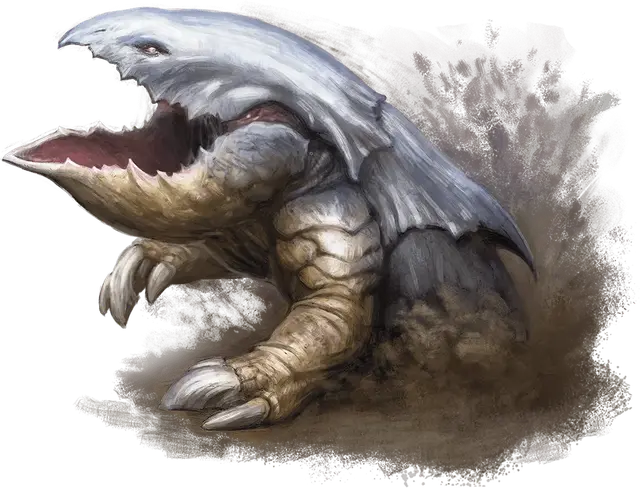

Панцирница
Bulette
Большой Монстр, без мировоззрения

Класс Доспеха 17 (природный доспех)
Хиты 94 (9к10 + 45)
Скорость 40 футов, копая 40 футов
| мод | спас | ||
|---|---|---|---|
| СИЛ | 19 | +4 | +4 |
| ЛОВ | 11 | +0 | +0 |
| ТЕЛ | 21 | +5 | +5 |
| мод | спас | ||
|---|---|---|---|
| ИНТ | 2 | −4 | −4 |
| МДР | 10 | +0 | +0 |
| ХАР | 5 | −3 | −3 |
Навыки Восприятие +6
Чувства тёмное зрение 60 футов, чувство вибрации 60 футов, пассивное Восприятие 16
Опасность 5 (1800 опыта)
Бонус мастерства +3
Среда обитания Горы, Лес, Луг
Особенности
Прыжок с места. Панцирница совершает прыжки в длину на расстояние до 30 футов и прыжки в высоту на расстояние до 15 футов, хоть с разбегом, хоть без него.
Действия
Укус. Рукопашная атака оружием: +7 к попаданию, досягаемость 5 футов, одна цель. Попадание: Колющий урон 30 (4к12 + 4).
Смертельный прыжок. Если панцирница прыгает как минимум на 15 футов частью перемещения, она может после этого действием приземлиться на лапы в пространстве, содержащем одно или несколько других существ. Каждое такое существо должно преуспеть в спасброске Силы или Ловкости Сл 16 (на выбор цели) иначе будет сбито с ног и получит дробящий урон 14 (3к6 + 4) плюс рубящий урон 14 (3к6 + 4). При успешном спасброске существо получает только половину урона, не сбивается с ног, и толкается на 5 футов из пространства панцирницы в свободное пространство по своему выбору. Если в пределах дистанции нет свободного пространства, существо вместо этого сбивается с ног в пространстве панцирницы.
Описание
Панцирница — это огромный хищник, терроризирующий земли, в которых он обитает. Ее также называют «земляной акулой», и её единственная цель — питаться. Раздражительные и хищные, панцирницы не боятся других существ, и нападают, не обращая внимания на численное преимущество и силу противника.
Подземные охотники. Панцирницы, используя свои мощные когти, прорываются сквозь землю во время охоты. Они не обращают внимания на препятствия, вырывая деревья с корнями, провоцируя оползни и оставляя воронки. Колебания почвы и камней предупреждают панцирницу о движении, и она выпрыгивает на поверхность, широко распахнув свои челюсти.
Бродячее чудовище. Панцирница скитается по землям, питаясь любыми животными и гуманоидами, попадающимися на её пути. Этим существам не нравится плоть дварфов и эльфов, хотя они часто убивают их, прежде чем поймут, кого они убили. Больше всего панцирницы любят мясо полуросликов, и нет ничего лучше, чем погоня за пухлым полуросликом в открытом поле.
У панцирницы нет логова, она просто бродит по своим охотничьим угодьям до 30 миль в поперечнике. Единственным критерием для выбора территории является наличие пищи, и, истребив всех в округе, панцирница уходит. Часто их можно встретить у людских поселений, которые они терроризируют, пока жители не разбегутся в панике или пока панцирницу не убьют.
Все существа избегают панцирниц, которые пожирают все, что движется — даже других хищников и панцирниц. Вместе панцирницы собираются только для спаривания, которое сопровождается кровавой дракой, и, как правило, заканчивается смертью самца и его поеданием.
Магические создания. Некоторые мудрецы считают, что панцирницы это результат эксперимента безумных магов по скрещиванию черепахи и броненосца с помощью инъекций ихора демона. Некоторое время панцирниц считали вымершими, но через несколько лет они снова появились. Так как молодняк панцирниц никто не видел, некоторые мудрецы полагают, что существуют тайные гнезда, откуда взрослые особи выходят в мир.